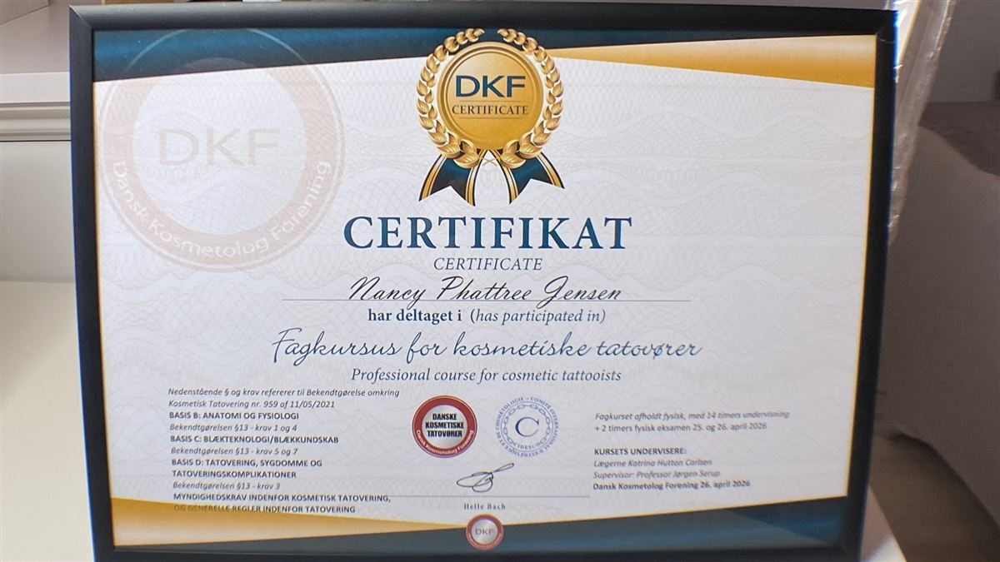
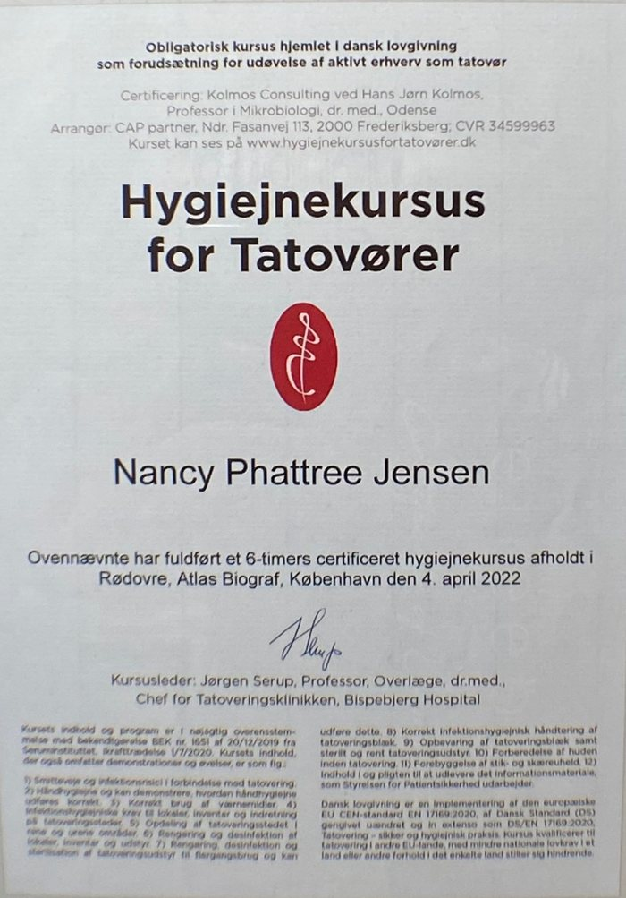
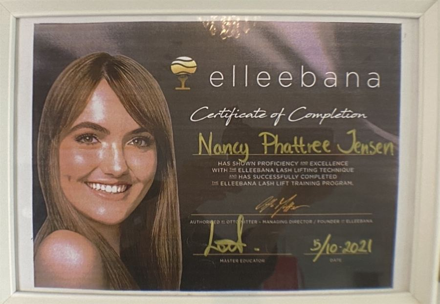
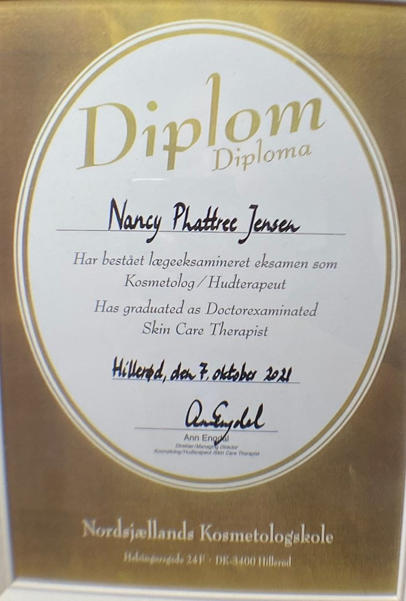
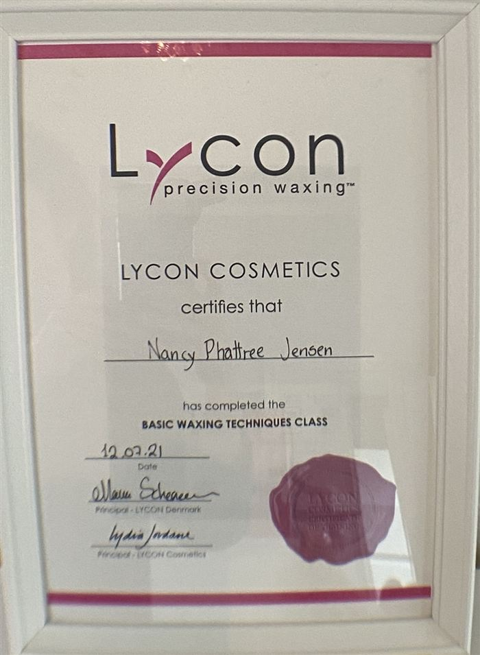
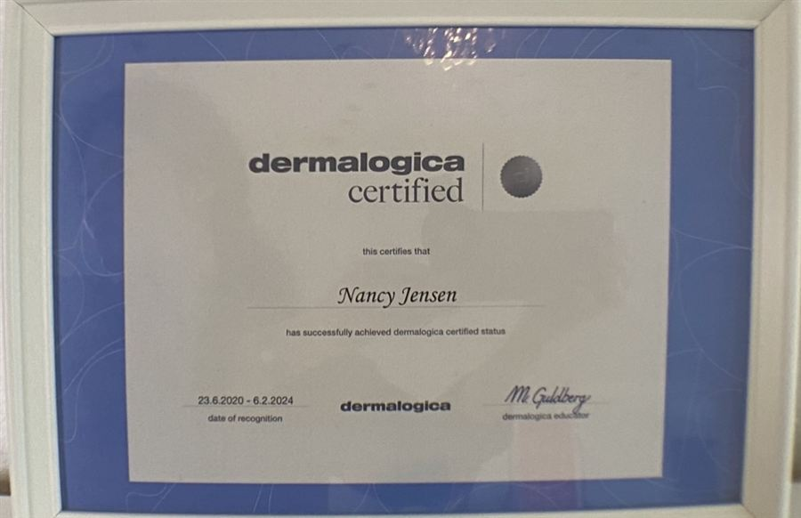
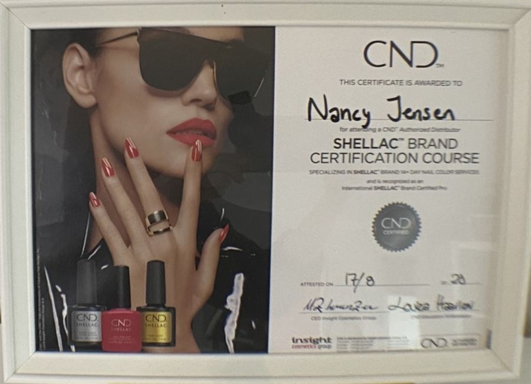
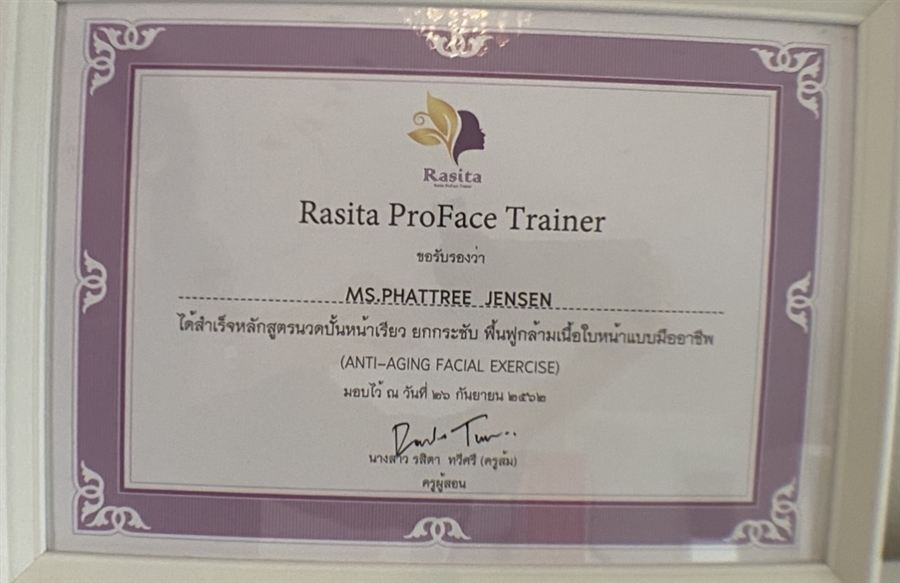
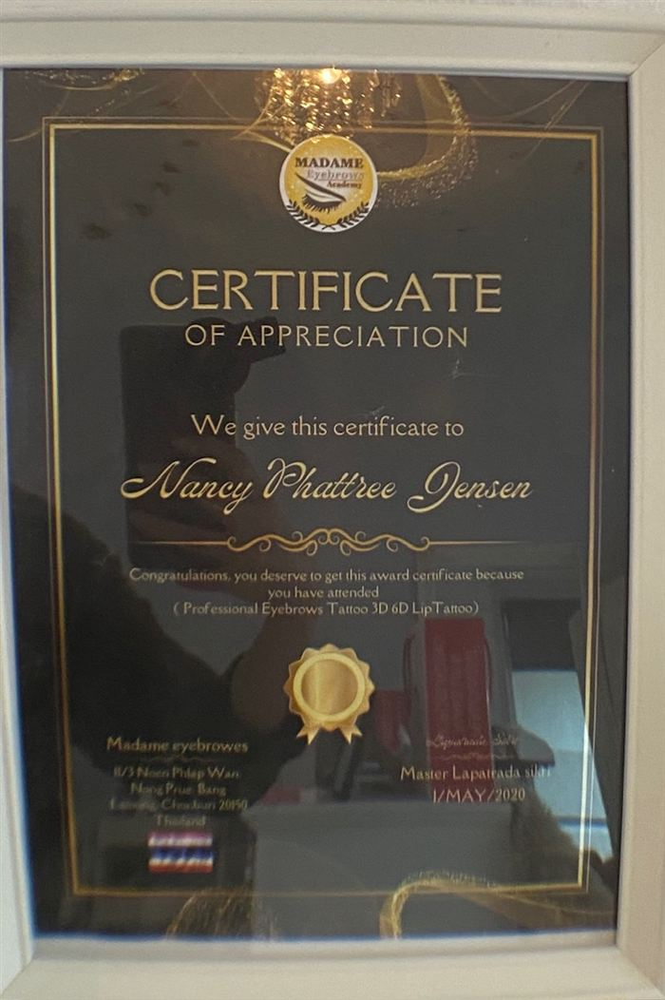
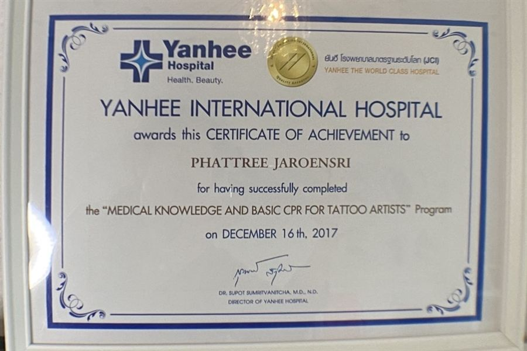

Phattree Nancy Jensen
Kosmetolog, hudterapeut & PMU-artist – med passion for sund hud og naturlig skønhed.

Fra egen hudrejse til passion
Min fascination af hudpleje startede i en ung alder. Allerede dengang var jeg betaget af skønhedens kraft og den glæde, den kan bringe. Da jeg overvandt dermatitis herpetiformis og ændrede min kost til glutenfri, opstod en ny passion: at hjælpe andre med at opnå den smukke og sunde hud, de drømmer om.
Gennem de sidste 10 år har jeg dedikeret mig til at finpudse min ekspertise og holde mig ajour med den nyeste viden inden for kosmetologi. Mit mål er at forvandle problemhud til frisk og glødende hud, der udstråler sundhed.
Kontakt mig for en gratis konsultation og hudanalyse – jeg glæder mig til at hjælpe dig med at opnå din drømmehud.
Book tidFaglighed du kan stole på
- Certificeret kosmetisk tatovør indenfor bryn pigmentering og Swiss Color Artist – Stella Simone PMU Academy, 160 timers lovpligtig undervisning, juni 2026
- Perfect Color Fade™ Master og ShadeFix™ Master (avanceret farvekorrektion af permanent makeup) – Stella Simone PMU Academy, juni 2026
- Fagkursus for kosmetiske tatovører med eksamen – Dansk Kosmetolog Forening (DKF), april 2026: anatomi og fysiologi, blækteknologi, tatoveringskomplikationer og myndighedskrav
- Medlearn-kurser i atopisk dermatitis og immunmedierede inflammatoriske sygdomme, 2023
- Hygiejnekursus for tatovører (lovpligtigt) – 6-timers certificeret kursus ledet af professor, overlæge Jørgen Serup, Tatoveringsklinikken på Bispebjerg Hospital, april 2022
- Lægeeksamineret Skin Care Therapist / kosmetolog – Nordsjællands Kosmetologskole, 2021
- Elleebana Lash Lift (2021), Lycon Basic Waxing Techniques (2021), Dermalogica Certified (2020–2024) og CND™ Shellac™ Brand Certification (2020)
- Rasita ProFace Trainer – professionel ansigtsmassage og ansigtstræning, der løfter og opstrammer (anti-aging facial exercise), 2019
- Permanent makeup – bryn og læber (Professional Eyebrows Tattoo 3D/6D & Lip Tattoo) – Madame Eyebrows Academy, Thailand, 2018 og 2020, samt medicinsk viden og basal hjerte-lunge-redning for tatovører – Yanhee International Hospital, Bangkok, 2017
Tryghed, kvalitet og nærvær
- Professionel og personlig behandling
- Fokus på naturlig hudpleje og æstetik
- Hygiejne, diskretion og ægte service
- Tid og respekt for hver eneste kunde
Min vision er at skabe et trygt rum, hvor du kan føle dig smuk, afslappet og set. Jeg tror på naturlige resultater, ro i rummet og behandlinger, der får dig til at blomstre – både udenpå og indeni.
Jeg arbejder med nøje udvalgte kvalitetsmærker: Dermalogica, Decléor og Elleebana.

Certificeret kosmetisk tatovør
I juni 2026 blev jeg certificeret kosmetisk tatovør indenfor bryn pigmentering og Swiss Color Artist hos Stella Simone PMU Academy efter 160 timers lovpligtig undervisning med træning på levende modeller.
Samme måned gennemførte jeg Stella Simones masterclasses Perfect Color Fade™ Master, med fokus på farver, der heler smukt og holder, og ShadeFix™ Master i avanceret farvekorrektion af tidligere permanent makeup.
Permanent makeup er ikke nyt for mig: Jeg tog min første uddannelse i bryn- og læbetatovering hos Madame Eyebrows Academy i Thailand (2018) og et kursus i medicinsk viden og førstehjælp for tatovører på Yanhee International Hospital i Bangkok (2017).
Forinden bestod jeg Dansk Kosmetolog Forenings fagkursus for kosmetiske tatovører med eksamen (april 2026) og det lovpligtige hygiejnekursus for tatovører ved Tatoveringsklinikken på Bispebjerg Hospital (2022).
Sammen med min uddannelse som lægeeksamineret kosmetolog betyder det, at jeg kender huden – og kan give dig naturlige, holdbare bryn under trygge og hygiejniske forhold.
Læs om permanent makeup bryn

Uddannet i de produkter og teknikker, jeg bruger
Ud over min kosmetologuddannelse er jeg certificeret hos producenterne bag de mærker, jeg arbejder med – og uddannet i permanent makeup siden 2018.

Certificeret i Elleebanas lash lift-teknik, som løfter og former dine egne vipper.

Nordsjællands Kosmetologskole – grunduddannelsen bag mine ansigts- og hudbehandlinger.

Basic Waxing Techniques hos Lycon Danmark – skånsom voksbehandling af ansigt og krop.

Uddannet i Dermalogicas hudanalyse og professionelle ansigtsbehandlinger.

Certificeret i CND Shellac – neglelak, der sidder smukt i op til 14 dage.

Professionel ansigtsmassage og ansigtstræning, der løfter, opstrammer og styrker ansigtets muskler – grundlaget for mine ProFace-behandlinger.

Certificate of Appreciation for Professional Eyebrows Tattoo 3D/6D & Lip Tattoo.

Diplom i permanent makeup: bryn (3D/6D) og læber, Thailand.

Medicinsk viden og basal hjerte-lunge-redning for tatovører.